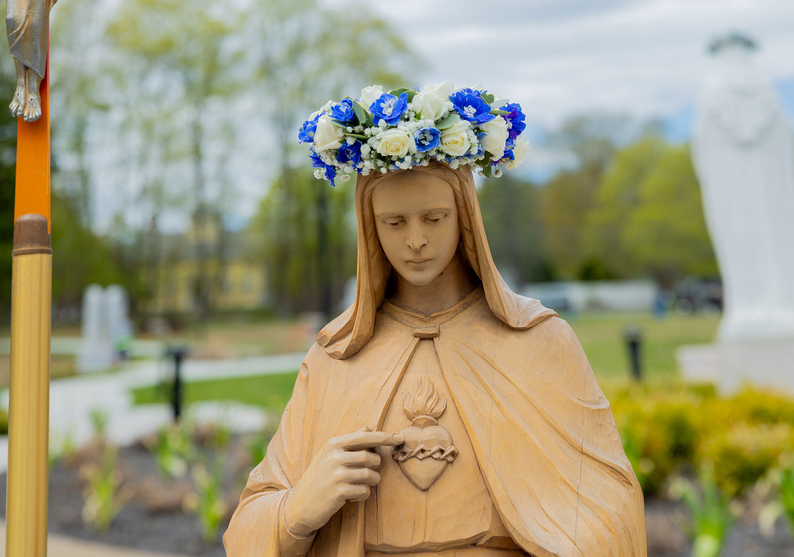
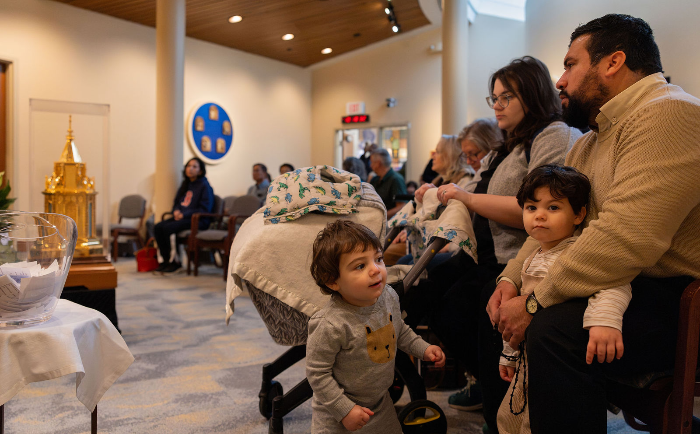
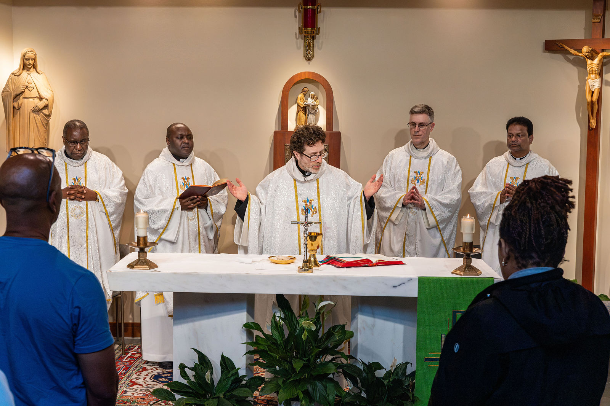
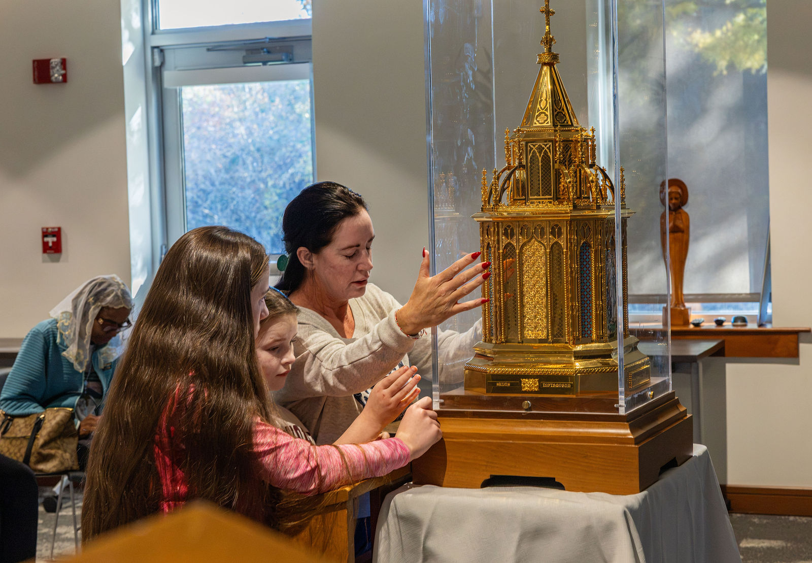
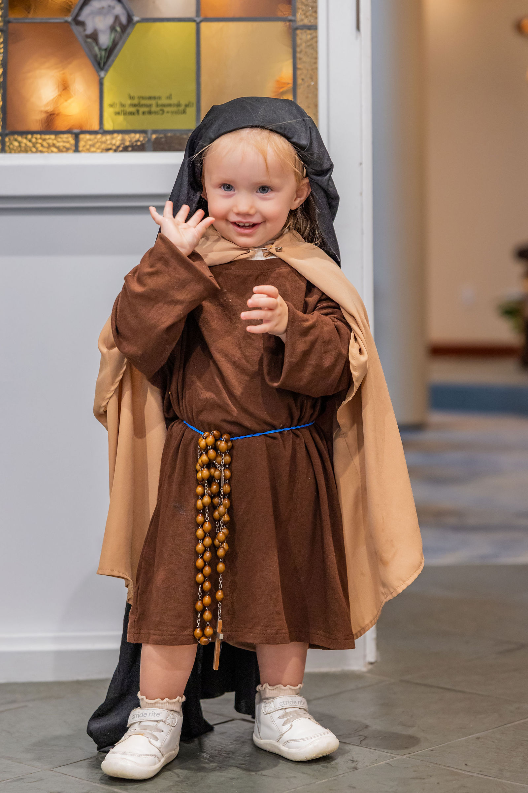
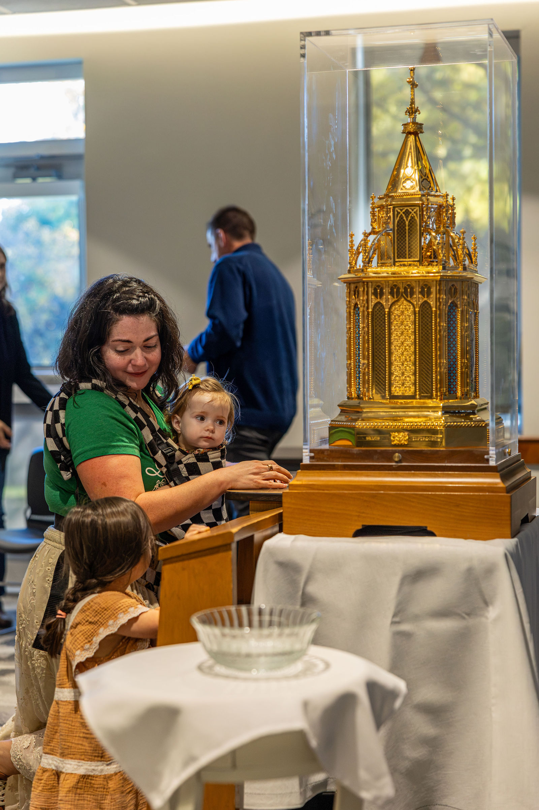

The Joyful Mysteries
With Father Patrick Peyton, C.S.C.
Make room for a moment of prayer. Follow Father Peyton through the Joyful Mysteries, with scenes from the life of Jesus and Mary.

At the kitchen table or at the end of a long day. Find a prayer to share, a Rosary to follow and ideas to help your children join in.

From The Father Peyton Center. Monday–Friday, Eastern Time.
11:30 a.m.Rosary
NoonMass
A moment with God, together.
The prayers. The steps. The mysteries.
Guides and activities for family life.
Ask our prayer community to pray with you.
Choose something you can use together, right where you are.




Help them discover the Rosary through pictures, share a Sunday Gospel activity, or find a prayer they can help lead.
Explore the illustrated Family Rosary Companion.
Find Sunday Gospel activities to share.
Follow your child’s interest and attention. Give everyone one small way to take part.
Start wherever fits your family. With mixed ages, one person can name a mystery, another can lead a response, and others can point or listen. No download or materials are needed for these prayers.

With Father Patrick Peyton, C.S.C.
Make room for a moment of prayer. Follow Father Peyton through the Joyful Mysteries, with scenes from the life of Jesus and Mary.

A reflection with Father Fulgens Katende, C.S.C.
A short reflection on welcoming Jesus’ love and making room for others at our table.

Through the Mysteries · Podcast
Explore reluctance toward the Rosary and discover a different way to understand Mary and this prayer.

How’s Your Prayer Life? · With Scott Weeman
Scott Weeman reflects on recovery, surrender and gratitude, and on bringing everyday struggles honestly to prayer.
Reflect on the life of Jesus with Mary. Pray from the Sign of the Cross through all five decades, with every prayer on the page and your place saved as you go.
The usual weekday pattern is a guide; you can pray any mystery.
Pray today
Reflect on the Resurrection and the hope of new life.

A prayer to lead. An intention to share. A moment to listen. Help everyone in your family take part.
Choose a moment you already share. Let each person offer an intention. Give children a prayer to lead. Start with what you can do together, then keep growing.
Read an idea for ordinary family life, or spend a quiet moment with the mysteries.
Meet others through prayer, fellowship and ministry programs. Check each program for current dates, availability and who it welcomes.
Dates are listed by the ministry on each program’s page. If no future date is listed, check back for the next invitation.

“The family that prays together stays together.”
Venerable Patrick Peyton believed in the power of family prayer. Family Rosary continues that invitation through prayer, resources and ministry with families around the world.
Your support helps Family Rosary share the gift of prayer with families.